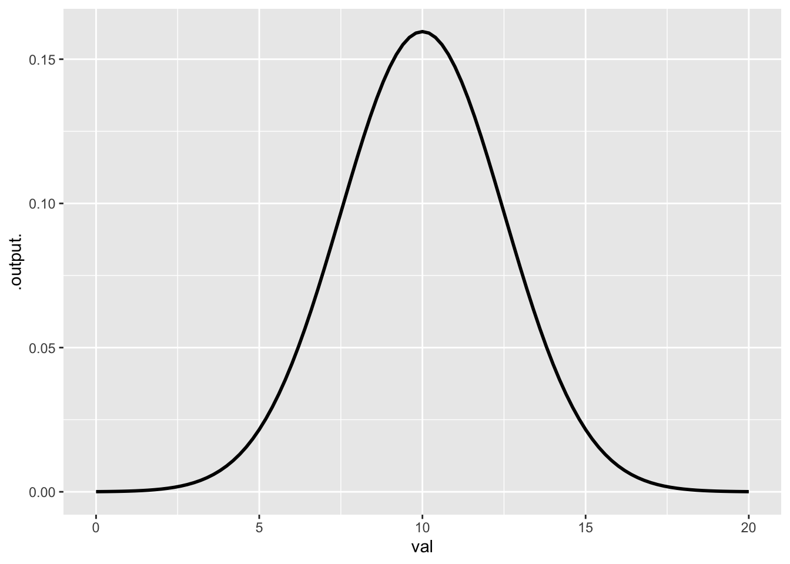
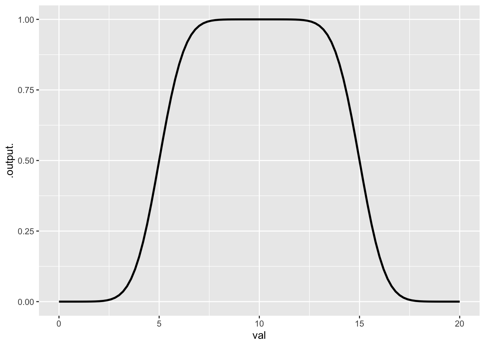
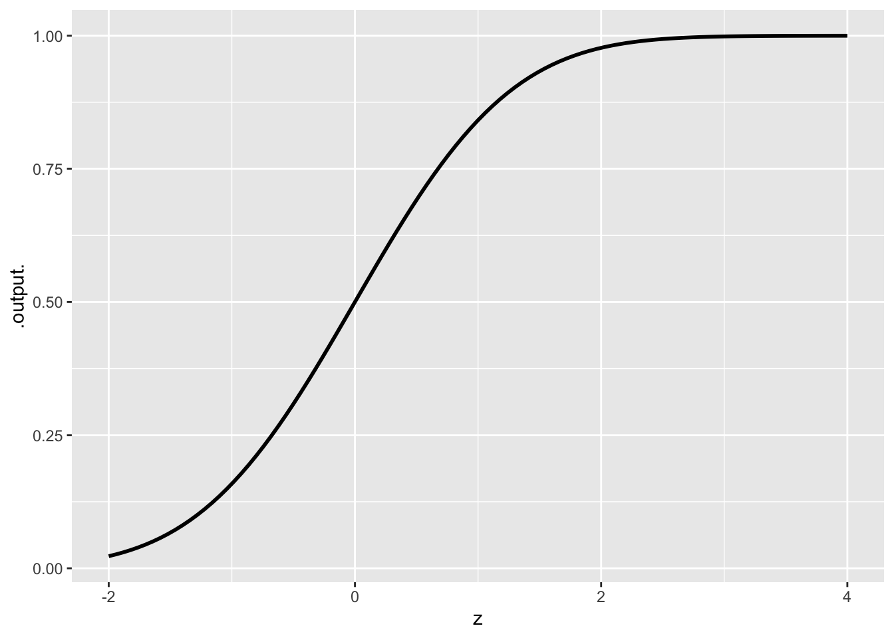

Quantitative Argumentation
Chapter 6 Exercises
Note6.A
Exercise 1 According to Chapter 6, what is the definition of a mathematical function?
Exercise 2 To double a quantity means to multiply it by 2. Trebling means multiplying by 3. And you’ve probably heard of “quadrupling,” which is multiplication by 4.
If you repeatedly double a quantity, it will eventually get quite big. For instance, Table 1 shows growth from a starting quantity of 1 as it is successively doubled.
| Times doubled | Quantity | Exponent notation |
|---|---|---|
| 0 | 1 | 20 |
| 1 | 2 | 21 |
| 2 | 4 | 22 |
| 3 | 8 | 23 |
| 4 | 16 | 24 |
| 5 | 32 | 25 |
| 6 | 64 | 26 |
| 7 | 128 | 27 |
| 8 | 256 | 28 |
| 9 | 512 | 29 |
| 10 | 1024 | 210 |
| \(\vdots\) | \(\vdots\) | |
| 20 | 1,048,576 | 220 |
| \(\vdots\) | \(\vdots\) | |
| 30 | 1,073,741,824 | 230 |
| \(\vdots\) | \(\vdots\) |
Now imagine a situation where there is a quantity that doubles every day. For instance, this might be the amount of algae in a lake during an “algal bloom.” If the lake had 1 gm of algae on day zero, it would have 2 gm on day one, 4 gm on day two, and so on. By day 10, the biomass of the algal bloom would be 1024 gm, that is, just over 1 kg. Wait another 10 days, there will be 1,048,567 gm, that is, more than 1000 kg. This pattern of growth is called exponential growth.
Why exponential growth? In the third column of ?@tbl-2-exponential the quantities are written using exponents. For instance, in 26, the exponent is 6. In terms of the algal bloom, the number 23 is the biomass of algae on day 3. Similarly, 25 is the biomass on day 5. In this exponential growth, the exponent increases steadily by 1 each day. But the biomass is 2exponent and grows quickly and at an every-growing rate.
- What is the rate of change of biomass with respect to time, looking at time 5 to 6? Remember, the change in biomass will be on top in the ratio, the change in time (we asked about 1 day).
- What is the rate of change of biomass with respect to time over the interval day 8 to 9?
It’s very convenient for the purposes of this problem that the algal biomass doubles with every new day. In reality, however, the doubling time would depend on things like the temperature or the oxygen or mineral content of the water.
Suppose that the doubling time for algae is 3.5 days. How many days would it take for the biomass to reach 1024 gm (that is, about 1 kg)?
Exercise 3 Of twos and tens
exp2() is an exponential function, but it is by no means the only one. The characteristic of exp2() that makes it exponential is that increasing the input by one always produces an output that is bigger by a factor of two. For instance:
exp2(3.5)[1] 11.31371exp2(4.5)[1] 22.62742exp2(5.5)[1] 45.25483The other exponential functions behave similarly. That is, increasing the input by 1 increases the output by a factor of ____? The blank (___) is the number that characterizes the exponential function.
For instance, we can imagine an exponential function where an increase in the input by 1 produces an increase in output by 10-fold. There is no standard name for this 10-fold exponential function, so we will invent one just for this problem: the “tenfold()” function.
tenfold(0.7)[1] 5.011872tenfold(1.7)[1] 50.11872tenfold(2.7)[1] 501.1872- Based on the pattern you observe above for tenfold(), what will be the output when the input is 4.7?
- As you know, 0.7 - 1 = -0.3. Keeping that in mind, what will be the output from tenfold(-0.3)?
All the exponential functions are merely input scaled versions of doubling(). For instance, tenfold(x) is the same as doubling(3.3219281 * x):
tenfold(4.2)[1] 15848.93exp2(3.3219281 * 4.2)[1] 15848.93Things work out the other way, too.
exp2(6.92)[1] 121.0954tenfold(6.92 / 3.3219281)[1] 121.0954What’s special about 3.3219281? It is the amount of doublings that leads to an output of 10:
exp2(3.3219281)[1] 10We can find the special number just by asking how many doublings lead to a ten-fold increase:
log2(10)[1] 3.321928History might have followed a path where tenfold() would be the standard exponential function. But there is no strong reason to change now, since exp2() and log2() do everything that tenfold() and tenfoldings() can do. Calculations with paper and pencil would be easier with tenfold() and tenfoldings(). For example,
log2(1000)[1] 9.965784tenfoldings(1000)[1] 3- What is the output of tenfoldings(1000000)?
While everyday people might find it easier to work with tenfold() and tenfoldings(), mathematicians and many scientists routinely use another exponential function named exp(), whose output increases by 2.71828182846-fold whenever the input increases by 1.
Using 2.71828182846-fold might seem crazy, but there are good reasons for it, at least for those heavily involved with quantitative thinking. For instance, the rate of change of exp(x) with respect to x is exactly exp(x). And, delving into the world of “imaginary” numbers used by mathematicians, physicists, and some engineers, there is the remarkable fact that exp(3.1415926535i) gives -1.
Just as exp2() has log2() to convert output into input, and tenfold() has tenfoldings() to do the same job, exp() has a function that we might call “expings()”. For instance:
exp(-2.302585)[1] 0.1expings(0.1)[1] -2.302585The official name for the expings() function is the “natural logarithm function,” written \(\ln()\) in print and log() in almost all computer languages. The official names for log2() and tenfoldings() are, in computer languages, log2() and log10().
There’s no right answer to the following question. We’re just interested in your opinion on the matter.
In your heart, which would you like to be the standard exponential function?
Keep in mind that these are all exponential functions and differ only by the amount of input scaling.
Exercise 4 Heavier individuals burn more calories due to the increased energy needed to move their bodies, while faster paces and inclines require more exertion, boosting calorie expenditure. More fit individuals tend to be more efficient, burning fewer calories at a given activity level than less fit individuals.
Translate the previous paragraph into a list of the inputs to and output from a function. You don’t have to build the function, but you should give plausible units for the input and output quantities.
Exercise 5 Write down an algorithm for adding two numbers, each with 2 digits. You can assume that you already have the algorithm for adding single digits, for instance 7 + 2.
In addition to your algorithm, write down a table that shows the output for adding any digit 0 to 9 to another digit.
Exercise 6 In the text’s example about sun position, cloudiness, and production, select the correct description:
Exercise 7
- Recall the
monthly_payment()function. xf(“fig-payment-r-slice”)is a slice plot that holdsprincipal` constant. Which of the following correctly describes the plot?
- UNRESOLVED fig-payment-years-slice is a similar slice plot. that holds
principalconstant. Which of the following correctly describes that plot?
Exercise 8 For the exp2() function …
What is the output value when the input is 0?
What is the output value when the input is 1?
What is the output value when the input is 2?
What is the output value when the input is -1?
At what input will the output of exp2() be 1/2?
Now turn to the closely related log2() function. (Remember that log2() is related to exp2() but they are different functions.)
When the input to log2() is 8, what is the output?
When the input to log2() is 4, what is the output?
When the input to log2() is 1/2, what is the output?
When the output from log2() is -2, what is the input?
Exercise 9 Consider a function Profit(price, weather) used by an ice cream shop owner to predict daily earnings.
Input 1:
price(the cost of a cone, set by the owner).Input 2:
weather(the daily high temperature).Internal Calculation: The model internally calculates demand (how many people buy ice cream) based on the price and weather. It then calculates profit by subtracting costs from revenue.
In a system diagram of this specific model, how would we classify the variable demand?
Exercise 10 Which core modeling functions have a positive rate of change everywhere?
recip()log2()hill()hillside()
Exercise 11 Chapter 8 described how the gaussian function is often used as a probability distribution function to represent an interval statement. But it might happen that a modeler prefers a distribution that is closer to uniform, like that in Figure 1(b).
- Build a custom function that looks like Figure 1(b). As a hint, here is a riddle: How do you build a hill out of two hillsides?


- Using linear combination of two functions, build a custom function that looks like Figure 1(b). As a hint, here is a riddle: How do you build a hill out of two hillsides? We’ve scaffolded the problem: you just have to find appropriate values for the
???in the input scaling, and perhaps change the sign on one of the coefficients of the linear combination.
myfun <- function(val) {
hillside(val - ???) + hillside(val - ???)
}
slice_plot(myfun(val) ~ val, domain(val = 0:20))Copy your function definition here.
- The hillside() function has a parameter
sdthat governs the speed of the transition from zero to one. Modify your function to make the output look more like a uniform distribution running from 5 to 15.
Copy your new function definition here.
Exercise 12 Consider this plot of the hillside() function:
slice_plot(hillside(z) ~ z, domain(z = -2:4))
- What R function is being used to make the plot?
- Immediately following the name of the function, there is an opening parenthesis. The matching closing parenthesis is at the very end of the command. In R (as in many computer languages) the arguments to the function are contained inside the parentheses. If there is more than one argument, successive arguments are separated by commas. How many arguments are there to
slice_plot()?
The first argument to slice_plot() tells which function you want to graph. In the example, the first argument is hillside(z) ~ z. This is called a ☞ tilde expression ☜ so named because the tilde character (~) appears.
| Left | Middle | Right |
|---|---|---|
hillside(z) |
~ (tilde) |
z |
The left part of the tilde expression is a formula written in more or less conventional algebraic form. Other examples for this formula:
2*z + 3,osc(z),hillside(z) * osc(z).The right part of the tilde expression gives the name of the input variable. In the example, the name is
z, but you can use whatever name you think appropriate. Note that the formula in (i) must be written in terms of the input-variable name.The middle part of the tilde expression is merely punctuation, but it is essential punctuation. Among other things, the tilde makes clear what are the left and right sides of the tilde expression.
- Suppose that you want to call the input quantity
x. You can easily modify the command to do this, just substitutexforz. In how many places do you have to make the change?
Focus now on the graphic itself—Figure 2. The name of the input variable appears as a label on the horizontal axis. The label on the vertical axis, in contrast, is just a reminder that we are plotting the output of the function versus the input quantity.
The vertical scale will be created automatically by slice_plot(), taking into account the range of function output values. But the horizontal axis is different: the user specifies this. The numerical extent of the horizontal axis is called the graphics domain.
The second argument to slice_plot() is used for the graphics domain specification.
- What is the graphics domain in Figure 2?
In the example, the second argument is domain(z = -2:4). The graphics domain specification will always look like this, and uses the R function domain().
- How many arguments does
domain()take in this example?
There are two punctuation symbols in the argument to domain(). The colon (:) is placed between the two limits to be used for the domain. -2:4 means “minus 2 to 4.” The graphics domain zero to ten would be 0:10. The other punctuation mark is =. To the left of the = goes the name of the input variable. The expression z = -2:4 means “the graphics domain of z is to be -2 to 4.
- Using the “graphing a function” interactive R chunk, write an expression to plot out the function
osc()over the graphics domain 0 to 5. Use whatever you like as the input name. After checking that your expression works, copy the expression into the following answer block.
NoteChap 6 Key vocabulary
Only one of the following is a valid description of algorithm. Mark that one.
Only one of the following is a valid description of arg . Mark that one.
Only one of the following is a valid description of exogenous . Mark that one.
Only one of the following is a valid description of functions . Mark that one.
Only one of the following is a valid description of system . Mark that one.